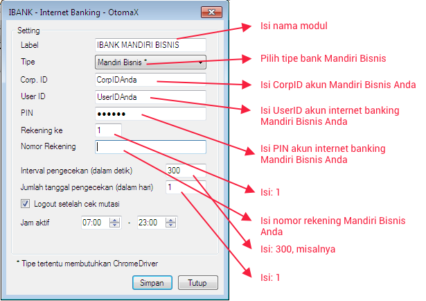

Mandiri Bisnis

Modul Internet Banking Mandiri Bisnis merupakan modul berguna mengotomatisasi pengecekan mutasi rekening Bank Mandiri Internet Bisnis, sehingga apabila ada transfer masuk sesuai jumlah tertentu dari Reseller, pada saldo Reseller akan ditambah secara otomatis jumlah yang sama tanpa campur tangan manusia.
Modul ini hanya tersedia di OtomaX edisi Standard, Pro, Advanced, Enterprise dan Ultimate klik disini. Jadi, apabila menginginkan fitur Internet Banking Mandiri Bisnis pastikan edisi OtomaX Anda adalah salah satu dari edisi - edisi itu; namun jika bukan, tak perlu khawatir, Anda dapat melakukan upgrade untuk ikut dapat menikmatinya klik disini.
Adapun langkah setting modul Internet Banking Mandiri Bisnis sebagai berikut:
- Pastikan telah menginstall software pendukung modul Internet Banking; jikalau belum, silahkan klik disini.
- Pastikan Anda sudah mempunyai akun Internet Banking Mandiri Internet Bisnis, kalau belum silahkan datang ke kantor Bank Mandiri terdekat dari tempat tinggal Anda.
- Pastikan Edisi OtomaX Anda edisi Standard, Pro, Advanced, Enterprise atau Ultimate sebab modul ini hanya tersedia di edisi tersebut.
- Pastikan telah menggunakan OtomaX versi 4.0.0 atau lebih tinggi, klik disini untuk melakukan update.
-
Pada OtomaX pilih modul Internet Banking -> klik kanan -> klik Tambah Internet Banking ->
kemudian lakukan sesuai petunjuk di gambar di bawah ini:

- Selesai
Catatan: Di OtomaX edisi Standard dan Pro terdapat modul Internet Banking mulai versi 4.0.0.